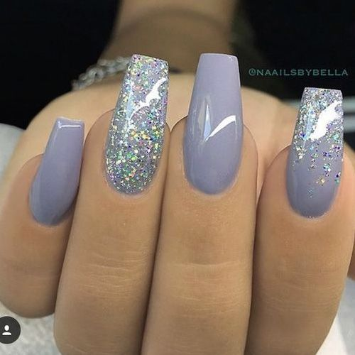

Nail Designs



How to keep nails healthy?
~Keep fingernails clean and dry
~Use sharp manicure scissors or clippers
~Use lotion
~Ask your doctor if you can try biotin
~You can use nail polish but you must use acetone-free nail polish remover
~When working in the house you can wear gloves to keep nails clean
~Moisturize cuticles
~Trim nails oftenly
~Clean with a nail brush
~If you see infections in your nail tell your doctor
What does your nails say about your health?
Having a touch of white, something rimpling, or bumps can be a sign of having a disease in your body. Liver and heart problems can show up in your nails.
Pale nails- can be a sign of serious illness: Anemia, congestive heart failure, liver disease or malnutrition.

White nails with darker rims- liver problems: Hepatitis.
Yellow nails- the cause for this is a fungal infection. In a rare case it can cause serious conditions such as thyroid disease, lung disease or diabetes.

Bluish nails- the body isnt getting enough oxygen and could indicate a lung or heart problem.
Rippled or pitted nails- can be an early sign of psoriasis or inflammatory arthritis.

Cracked or split nails- thyroid disease or a fungal infection.
Puffy nail fold- lupus or another connective tissue disorder.

Dark lines beneath the nail- caused by melanoma the most dangerous kind of skin cancer.
Gnawed nails- anxiety or an obsessive-compulsive disorder.